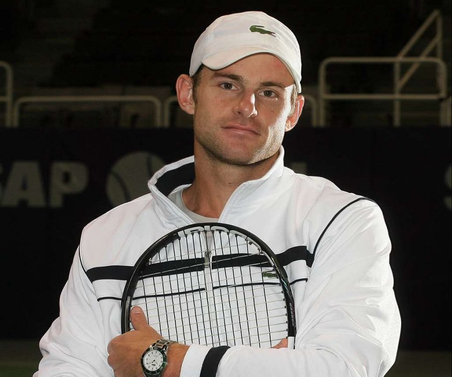

Nekadašnji prvi teniser sveta Endi Rodik nedavno je izjavio da treba sačekati kraj karijera Velike trojke za raspravu o najvećem svih vremena, ali ipak ističe šta bi po njegovom mišljenju bio uslov da to bude Novak Đoković."Po mom mišljenju, trenutno su to Rodžer i Serena. Ali ako Novak nekako dođe do tačke u kojoj je izjednačen po broju Gren slem titula sa Rafom i Rodžerom, onda međusobni skor i Masters titule postaju vrlo važni", kaže Rodik i obrazlaže:
"Činjenica da Novak sa svima na svetu sa kojima je igrao više od nekoliko puta ima pozitivni skor je luda, pozitivan je i sa svim najvećim rivalima (27-23 sa Federerom, 29-26 sa Nadalom). Kažem, ako dođe do tih Gren slem trofeja, biće teško napraviti argumente protiv te njegove biografije". Po broju Masters trofeja Nadal je prvi sa 35, Đoković je upisao jedan manje, ali jedini je koji je osvojio svih devet turnira iz te kategorije.